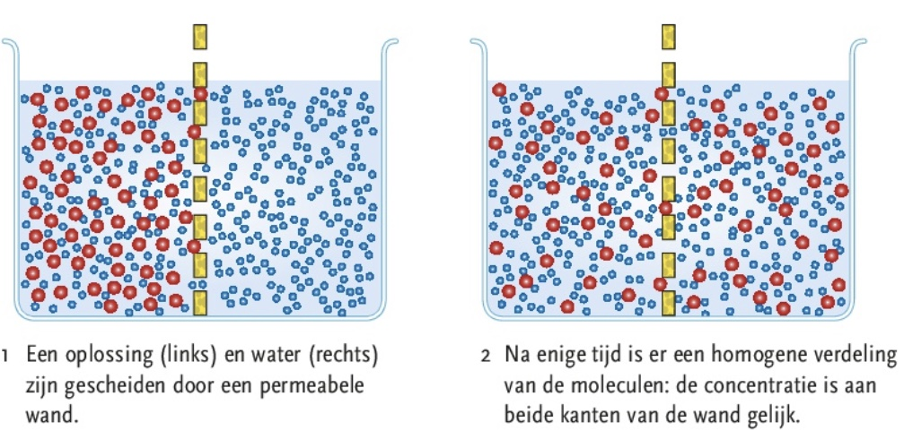
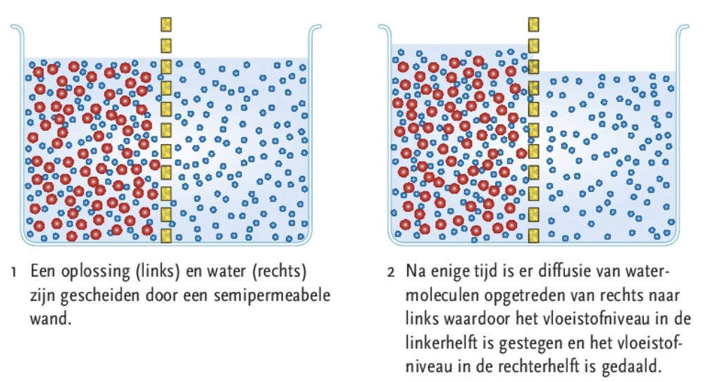
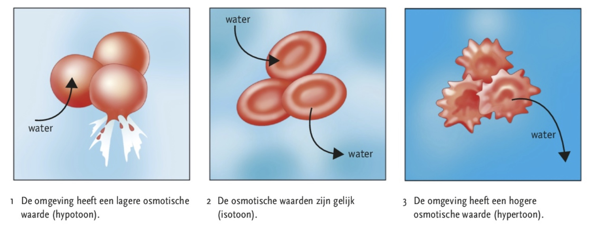
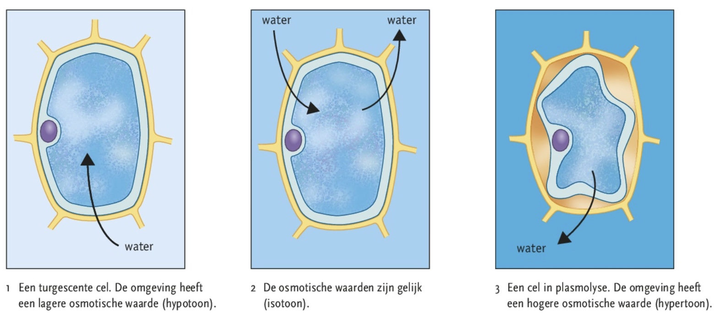

Je kunt de concentratie van een oplossing berekenen.
Je kunt uitleggen wat diffusie en osmose is en toelichten welke rol osmose speelt bij de stevigheid van planten.
Je kunt beschrijven hoe transport van stoffen via (cel)membranen plaatsvindt.




Concentratie
Sommige stoffen kunnen membranen ongehinderd passeren. In cellen vinden reacties plaats waar energie voor nodig is, afkomstig van chemische reacties. Een cel heeft hiervoor voedingstoffen nodig en produceert afvalstoffen waardoor de concentratie van de voedingstoffen afneemt. De stoffen gaan door het celmembraan, door de membranen van organellen heen. Een oplossing bestaat uit een oplosmiddel en een of meerdere opgeloste stoffen. Bij organismen is water het oplosmiddel. 1 ppm = 0,0001%
Diffusie
Diffusie is de verplaatsing van een stof van een plaats met een hoge concentratie naar een plaats met een lage concentratie van die stof. De diffusiesnelheid is de snelheid waarmee de moleculen van een opgeloste stof zich homogeen over de ruimte verdelen.
Osmose
Vloeistoffen en gassen kunnen gescheiden zijn door een wand met poriën, als de moleculen de poriën kunnen passeren, kan er diffusie optreden. De wand is dan permeabel (doorlatend). Een wand waar de ene moleculen wel en de andere niet doorheen kunnen, noem je selectief/semi permeabel. Diffusie van water door een semipermeabel membraan heet osmose.
Osmotische waarde en osmotische druk
De osmotische waarde is de hoeveelheid opgeloste deeltjes per volume-eenheid. De oplossing met de hoofste osmotische waarde oefent osmotische druk uit: water gaat van de lage naar de hoge osmotische druk. Door osmose kunnen oplossingen van verschillende concentraties aan beide zijden van een semipermeabel membraan gelijke concentraties krijgen.
Membranen zijn semi-permeabel
De membranen scheiden oplossingen met een verschillende concentratie. O2 en CO2 kunnen membranen ongehinderd passeren (diffusie). Watermoleculen kunnen membranen passeren door speciale eiwitten (aquaporines). Als een dierlijke cel in een isotone oplossing komt (osmotische waarde gelijk), blijft het volume van de cel gelijk. Als die cel in een hypotone oplossing komt (osmotische waarde lager dan die in de cel), dan komt water via osmose de cel in. Als de cel in een hypertone oplossing komt (osmotische waarde in de cel hoger dan buiten de cel), gaat water de cel uit door osmose en kan de cel sterven.
Stevigheid door osmose
Celwanden van planten zijn volledig permeabel. Vanwege de stevige celwand om de plantaardige cellen, barsten deze niet i.t.t. dierlijke cellen. De druk op de wand neemt wel toe, deze druk heet turgor. Cellen met turgor noem je turgescent. Een plantaardige cel in een isotone oplossing verliest zijn turgor, de celwand laat los van de celwand (plasmolyse) en uiteindelijk sterft de cel en krijgt het een bruine kleur.
Passief transport
Als stoffen verplaatsen van een hoge naar een lage concentratie, gaan ze met het concentratieverval mee. Er is geen energie voor nodig en is dus passief transport (bijv. diffusie en osmose). Dit gebeurd ook in fosfolipiden en porie-eiwitten. Voor ionen-transport bestaan ook porie-eiwitten. Porie-eiwitten kunnen selectief openen en sluiten. Transporteiwitten veranderen de vorm van de eiwitten, zijn specifiek voor een eiwit (passief transport).
Actief transport
Transport tegen het concentratieverval in kost energie, geleverd door ATP-moleculen (actief).
Transport via blaasjes
Het afsnoeren van blaasjes door het celmembraan om stoffen in de cel op te nemen, noem je endocytose. Het blaasje dat zich afsnoert van het celmembraan noem je een endosoom. Fagocytose is het proces waarbij via endosomen voedsel wordt opgenomen. Het blaasje met het ingesloten voedseldeeltje noem je het voedingsvacuole.